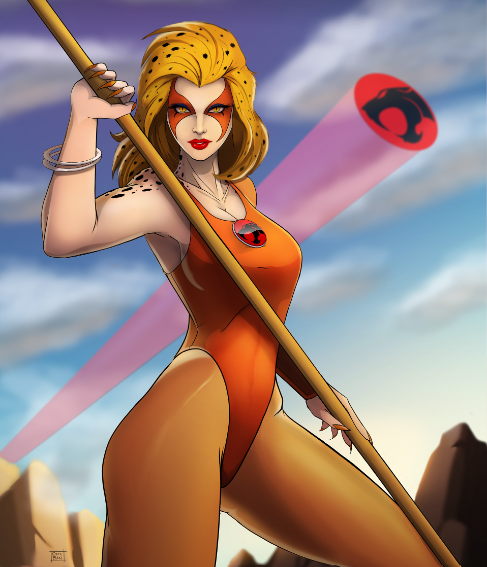

Cheetara

Raza: Thunderiana
Sexo: femenino
Estatura: 1,65 m
Peso: 50 kg (110 lb)
Hermosa, valiente y solidaria, a menudo es la voz de la razón. Posee un sexto sentido felino que le permite detectar si hay algún peligro o el mal está cerca.